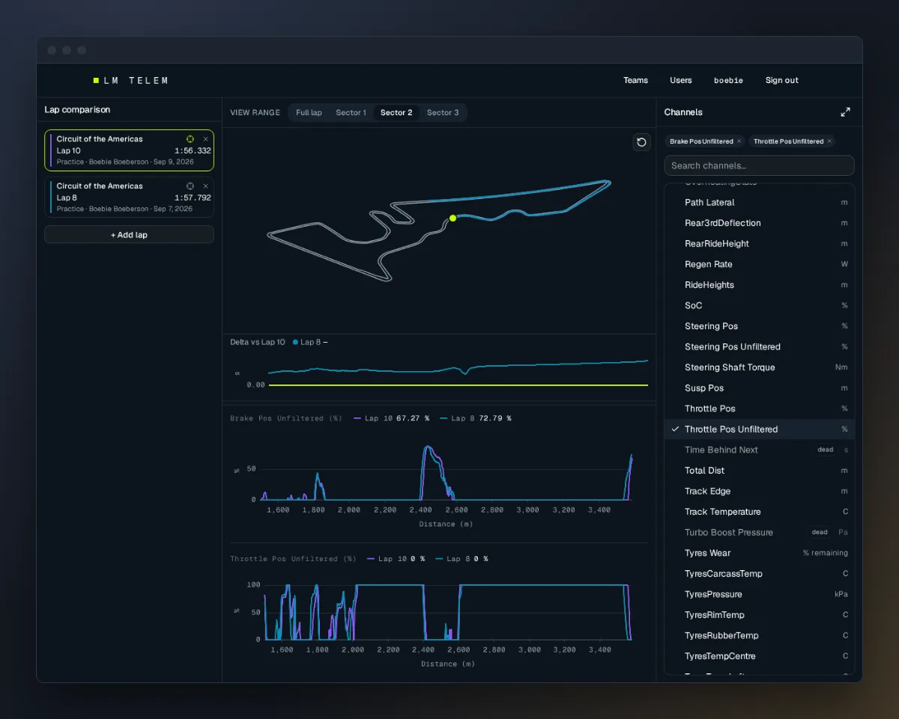
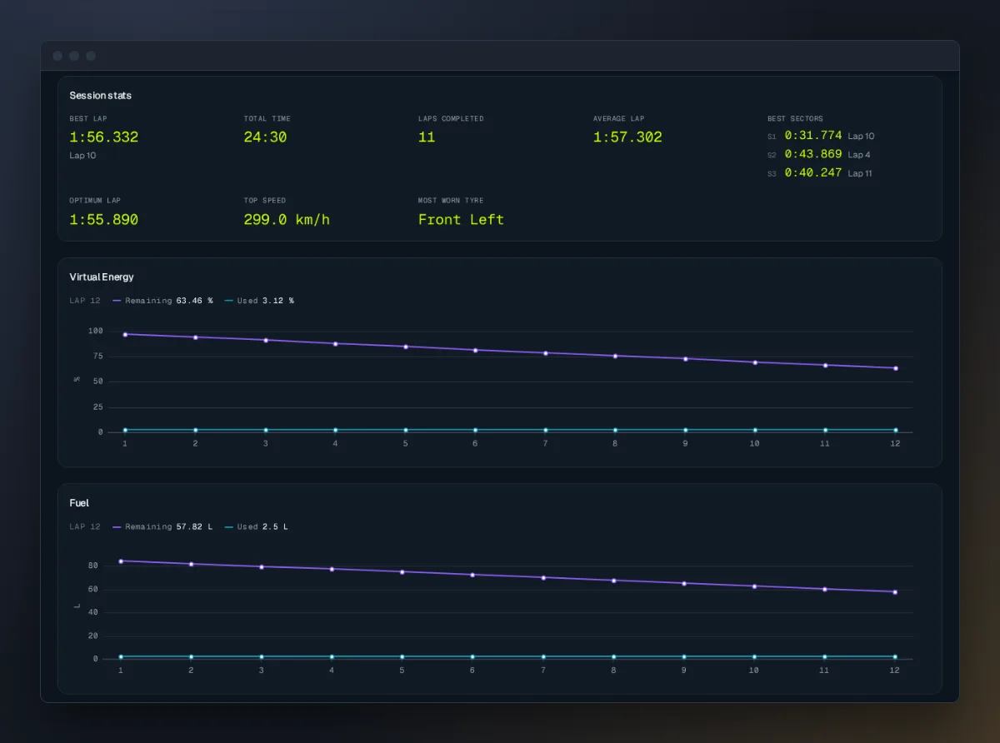
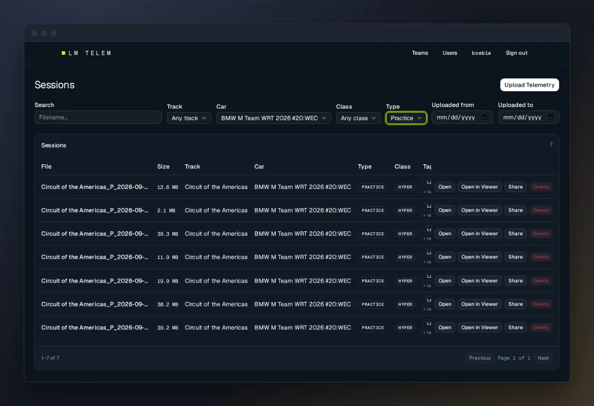

LM Telem



Situation
Sim racing is a type of video game that accurately simulates auto racing, including real-world variables like car physics, tire wear, and track conditions. It differs from arcade racing games by focusing on realism and the skills needed to handle a race car effectively. Le Mans Ultimate is the official game of the FIA World Endurance Championship, and it records telemetry as you drive: throttle, brake, steering, speed and about a hundred other channels, many times a second. Comparing your telemetry against a faster driver's is how you find where you're losing time. My friends and I race together, and sharing telemetry meant everyone paying for a third-party service. I built LM Telem so we could share and compare it for free, on something we host and brand ourselves.
Task
- Build a multi-user, multi-team dashboard where drivers upload their session telemetry
- Let drivers compare channel data lap against lap with their teammates
- Get the comparison features on par with the paid solutions
- Host it ourselves
Action
The game saves each session's telemetry as a DuckDB file. LM Telem's backend is FastAPI with Postgres as an index, and the uploaded files stay the source of truth. When a file is uploaded, a background job pulls out the session details and per-lap summaries, so the dashboard and session pages never have to open the raw files. The frontend is React with uPlot, a canvas chart library, because SVG charts can't keep up with several channels across several laps at once.
The hardest problem was data size. Some channels update 100 times a second, so one lap of one channel is about 10,000 points, and comparing a few laps across several plots gets into the hundreds of thousands. Each file is compacted losslessly when it's uploaded. The viewer then asks the server for only what fits the plot: the server splits the lap into distance bins and keeps the minimum and maximum of each bin. That brings a channel down to about 1,500 points without losing the spikes that matter on brake and throttle traces. The other hard part, which I'm still working on, is the comparison viewer itself. Frontend is one of my weaker spots, and some features that looked good on paper didn't make for a good experience once I used them.
Result
The comparison viewer works, but it still doesn't have the UX I want. It feels "on rails" and doesn't allow the kind of customization that's normal on these sites. I plan on updating it, but I wish I'd spent more time planning the viewer before I was too far in to change course without wasting time.
Overall this was a very fun project to work on, and it feels good seeing other people use it. It was also my first time immersing myself in a fully agentic workflow. I used a Trello board to automate delegating tasks to sub-agents, which was very eye opening. Some parts, like the telemetry viewer logic, were written more by the agents than by me, so I reviewed the code myself as it came in.